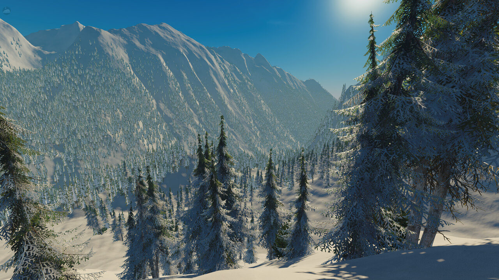
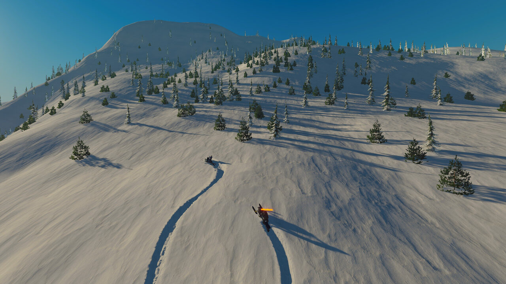
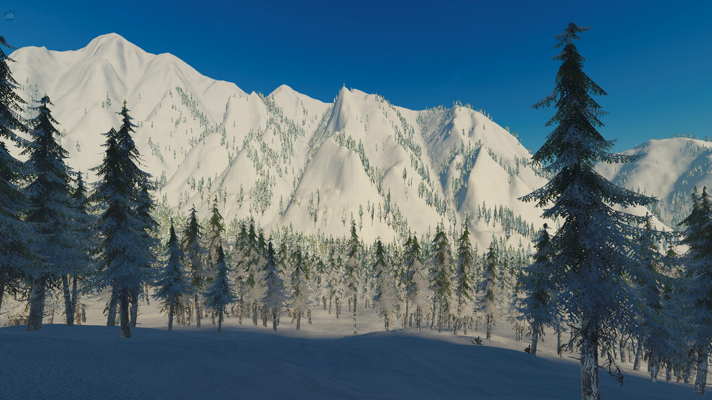
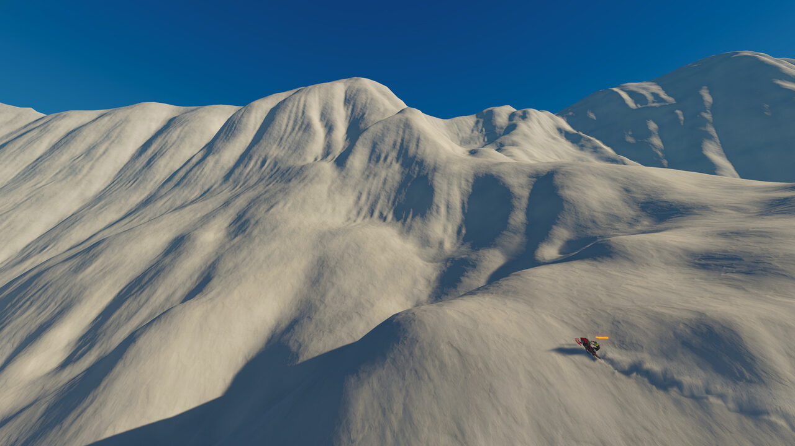
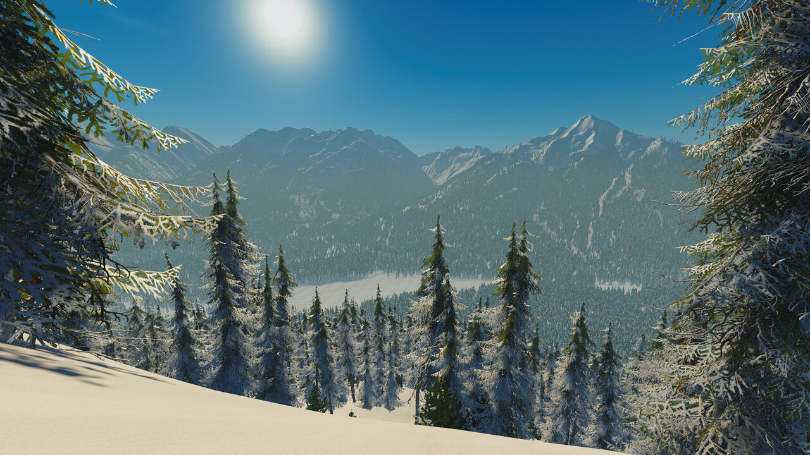
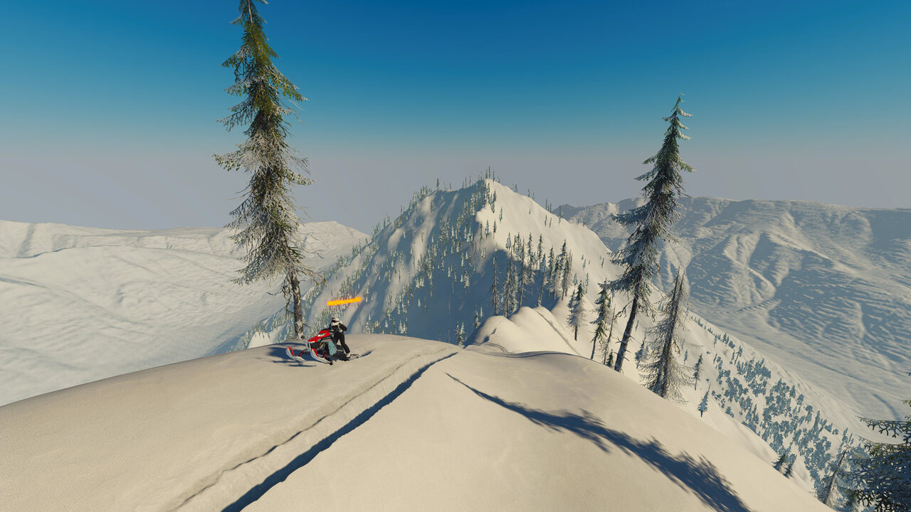

Examples
Below are some things people have made with heightmaps from this tool.
Sledders backcountry maps by DeNard420
Three of the four most downloaded maps for the snowmobile game Sledders (built in Unity) were made by DeNard420, and all of them start from terrain made with this tool. Together they have been downloaded more than 400,000 times on mod.io.
The process: find a real place worth riding, export a DEM of it here, then work it up in tools like Gaea, adding rocks, trees, a labelled topo map, and props such as cabins and power lines. The tree maps come from Kris Tapio (Tapios_BackCountry_Builds), who traces the real tree lines from high-resolution satellite imagery, so the trees in the game sit almost exactly where they do in real life, with realistic density and tree lines.
- Whistler, British Columbia: big chutes and peaks, trails, roads and rivers cleared
- Jackson Hole, Wyoming: close to 1:1 on the lower peaks
- Aspen, Colorado: jump lines, named chutes and ski runs
- Mount Rainier, Washington: glaciers, crevasses and a detailed topo map
Images

Whistler

Jackson Hole

Aspen

Jackson Hole

Whistler

Aspen
You can see more of these maps being ridden in DeNard420's clips on Medal.